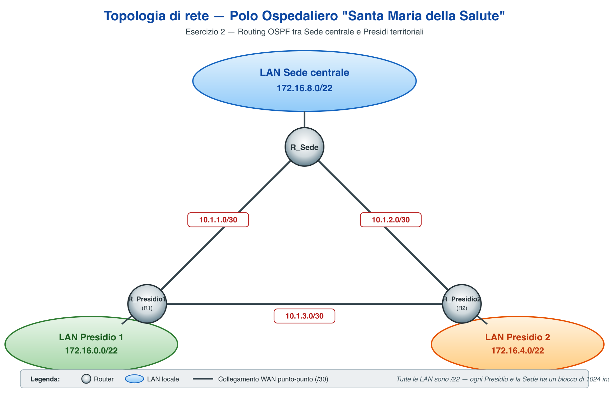

Il Polo Ospedaliero Universitario “Santa Maria della Salute” intende realizzare la nuova infrastruttura di rete della propria sede centrale e di quattro presidi sanitari territoriali. La sede centrale ospita sei reparti (Direzione Sanitaria, Pronto Soccorso, Reparti di Degenza, Diagnostica per Immagini, Laboratorio Analisi e Amministrazione) con complessivamente oltre 540 postazioni di lavoro fra PC, workstation diagnostiche e dispositivi clinici. Ogni presidio territoriale dispone di circa 12 postazioni per medici e personale infermieristico, oltre a tablet e dispositivi mobili usati per consultare le cartelle cliniche elettroniche.
Il portale CUP online per la prenotazione delle visite e il servizio di telemedicina devono essere accessibili da Internet in modo sicuro, collocati in una zona di rete separata dai sistemi clinici interni. I medici reperibili e gli specialisti esterni devono poter accedere alle risorse interne tramite connessione cifrata da sedi remote. Il personale sanitario utilizza una rete Wi-Fi dedicata per la gestione delle attività cliniche, mentre i pazienti dispongono di una rete Wi-Fi guest separata. Le ambulanze e le unità mobili sul territorio si collegano al sistema informativo ospedaliero tramite reti cellulari 4G/5G.
Le domande e gli esercizi seguenti fanno riferimento a questa realtà. Dove necessario, è possibile formulare ipotesi aggiuntive purché dichiarate esplicitamente.
Spiega la differenza tra routing statico e routing dinamico. Descrivi almeno due protocolli di routing dinamico (ad es. RIP e OSPF), indicandone le principali caratteristiche (metrica, tipo di algoritmo, scalabilità). Motiva poi la scelta tra routing statico e dinamico nel contesto della rete ospedaliera: quale utilizzeresti per collegare i quattro presidi territoriali alla sede centrale e perché?
Spiega il concetto di DMZ (Zona Demilitarizzata) e il ruolo del firewall nella protezione della rete ospedaliera. Perché il portale CUP online e il servizio di telemedicina devono essere collocati in una DMZ separata dai sistemi clinici interni? Descrivi la topologia tipica con due firewall (oppure un firewall a tre interfacce: outside / DMZ / inside), specificando quali tipologie di traffico vengono consentite o bloccate tra le diverse zone.
Spiega cos’è una VPN (Virtual Private Network) e i suoi vantaggi in termini di sicurezza ed economicità rispetto ad una linea dedicata. Descrivi poi la differenza tra VPN site-to-site e VPN remote access (host-to-LAN), indicando per ciascuna un caso d’uso coerente con il Polo Ospedaliero (ad esempio: quale soluzione adotteresti per collegare i presidi alla sede centrale e quale per i medici reperibili che si connettono dall’esterno).
All’Ufficio Sistemi Informativi del Polo Ospedaliero viene assegnato lo spazio 172.16.0.0/22 per indirizzare la rete di un presidio territoriale tipo.
Suddividi l’indirizzo in subnet distinte in modo da soddisfare i requisiti riportati nella tabella seguente, considerando che ogni segmento è collegato fisicamente ad un router e che la quantità di indirizzi assegnata a ciascuna subnet deve essere il più possibile aderente al numero di host effettivamente necessari (evitare sprechi di indirizzi).
| # | Segmento di rete | Host necessari | Indirizzo di rete | Subnet mask | Indirizzo broadcast | Range host utilizzabili |
|---|---|---|---|---|---|---|
| 1 | Wi-Fi tablet medici | 400 | ||||
| 2 | Personale ambulatoriale | 14 | ||||
| 3 | Apparecchiature diagnostiche | 7 | ||||
| 4 | Gestione locale | 2 | ||||
| 5 | Collegamento WAN (punto-punto) | 2 |
La figura seguente rappresenta la topologia semplificata della rete del Polo Ospedaliero, composta da tre router: R_Sede, R_Presidio1 e R_Presidio2, collegati tramite link punto-punto.

A) Completa la tabella di routing statica di R_Sede (le reti direttamente connesse sono già indicate; inserisci le rotte statiche mancanti):
| Rete destinazione | Subnet mask | Next-hop (gateway) | Interfaccia uscita |
|---|---|---|---|
| 172.16.8.0 | 255.255.252.0 | — | fa0/0 |
| 10.1.1.0 | 255.255.255.252 | — | fa0/1 |
| 10.1.3.0 | 255.255.255.252 | — | fa1/0 |
B) Configura il routing dinamico OSPF su R_Presidio1 utilizzando la sintassi della CLI di Cisco IOS. Scrivi tutti i comandi necessari per:
R_Presidio1> enable R_Presidio1# ____________________________________________________ R_Presidio1(config)# ____________________________________________ R_Presidio1(config-router)# _____________________________________ R_Presidio1(config-router)# _____________________________________ R_Presidio1(config-router)# _____________________________________ R_Presidio1(config-router)# exit R_Presidio1(config)# exit R_Presidio1#
Sul router R_Sede, configura una ACL estesa utilizzando la sintassi della CLI di Cisco IOS per implementare la seguente politica di sicurezza:
172.16.8.0/24) di accedere al server delle cartelle cliniche (172.16.11.10) sulla porta TCP 443 (HTTPS);Scrivi anche il comando di applicazione dell’ACL sull’interfaccia, indicandone la direzione (in / out) e motivando brevemente la scelta.
R_Sede> enable R_Sede# configure terminal R_Sede(config)# _________________________________________________ R_Sede(config)# _________________________________________________ R_Sede(config)# _________________________________________________ R_Sede(config)# interface _______________________________________ R_Sede(config-if)# ______________________________________________